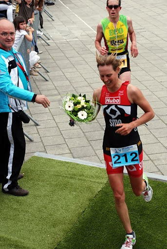
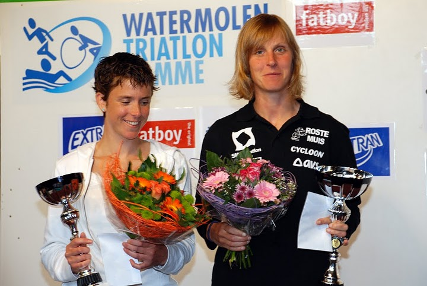

Melanie Matthys won zondag 13 juni in Hamme de kwarttriatlon. Ze pakte haar overwinning na een sterk loopnummer. De Leuvense Frone Wouters pakte na het zwemmen een ruime voorsprong op Matthys en de Antwerpse Heidi Veramme. Na de tweede fietsronde hadden beide dames de leidster te pakken in deze
stayerwedstrijd. SMO-atlete Matthys had bij het fietsonderdeel duidelijk de meeste reserves over en liep onbedreigd naar de overwinning met 3’ voorsprong op Veramme en Wouters.
Bij de heren ging de overwinning naar Pieter Heemeryck voor Koen Veramme en Philippe Malcolm. Frederik Dormaels miste bij het fietsen na een mindere wissel de juiste trein, maar werd knap 27e. Maarten Ost en Aaron Overmeire eindigden op de 39e en 88e plaats. Proficiat aan onze atleten!